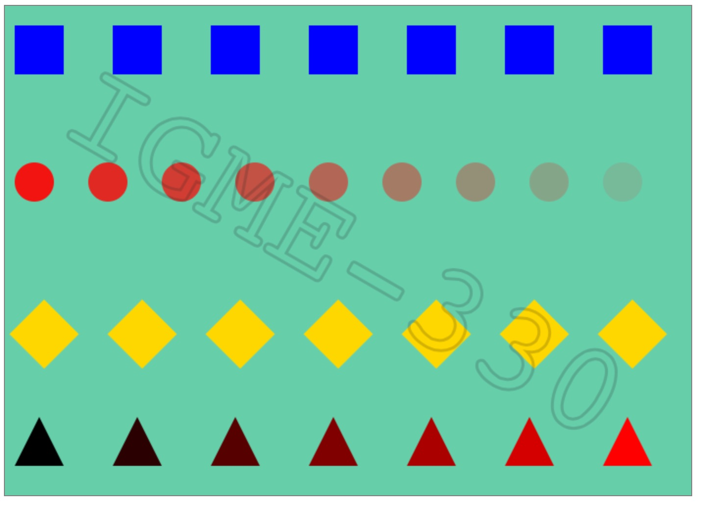

Avg Mono Font
This exercise ('Try-it #1') is a self-test on what we've covered in our first 3 or 4 days of class. Check the mycourses dropbox for the due date, it will be counted as a HW assignment with 10/10 possible points.
See below for a screenshot of what the completed version should look like. Each item must be 100% correct to receive credit. If you don't have it 100% correct, hand in what you have anyway, because late submissions will not be accepted. We'll work through the correct answers in class.
ctx.fillRect() and a for loop - is done for you!for loop to create 9 red circles in a row. Make the alpha of each circle decrease by .1 - i.e. the first circle is 0.9 alpha, the last circle is 0.1 alpha. You can control this with ctx.globalAlpha or by setting
the ctx.fillStyle with rgba() values. (2 points)for loop to create 7 yellow squares - each square will be rotated 45 degrees. You will need to use a combination of ctx.translate(), ctx.rotate(), ctx.save() and ctx.restore() to get this to work. (2 points)for loop to create 7 red triangles. You will create a JavaScript function named drawTriangle() to each triangle for you. You will need to use ctx.translate(), and probably ctx.save() and ctx.restore() to get this to work. (2 points)rgb(0,0,0) to rgb(255,0,0). (2 points)ctx.strokeText(), ctx.translate() and ctx.rotate() to create rotated text that is centered on the screen as in the finished example. I'm using dark gray courier text with 20% alpha in the example
- use something similar. Try to get it as close as possible, but yours will look a little different. You'll need to center the text and set the baseline before you rotate it. (2 points)